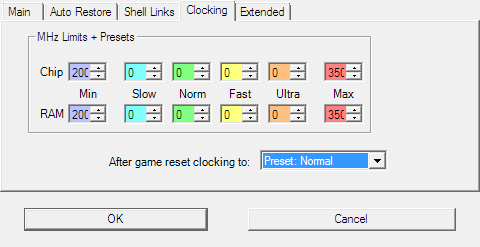
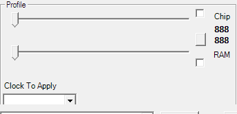
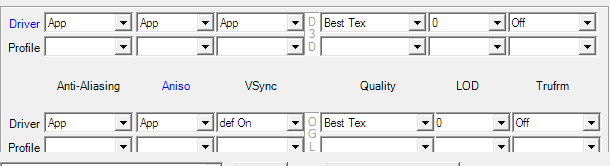

<html>
<title>3DProf - Clocking</html>
<body>
<!--
-->

<ul><lh>Table Of Content</lh>

  <li><a href="#Clocking">Clocking</a>
  <ul>
    <li><a href="#Clocking.Settings">Clocking Preferences</a>
    <ul>
      <li><a href="#Clocking.Settings.Limits">Limits</a>
      <li><a href="#Clocking.Settings.Presets">Presets</a>
      <li><a href="#Clocking.Settings.Misc">Misc</a>
    </ul>
    <li><a href="#Clocking.Controls">Controls</a>
    <ul>
      <li><a href="#Clocking.Controls.Current">Current</a>
      <li><a href="#Clocking.Controls.Profile">Profile</a>
    </ul>
  </ul>


  <li><a href="#3D">3D Options</a>
  <ul>
    <li><a href"#3D.Current">Current</a>
    <li><a href"#3D.Profile">Profile</a>
  </ul>


  <li><a href="#Profiles">Profiles</a>
    <ul>
    <li><a href"#Profiles.Creating">Creating</a>
    <li><a href"#Profiles.Saving">Saving</a>
  </ul>

<li><a href="#Help">Help</a>
</ul>

<!--
-->

<a name="Clocking"><h1>Clocking</h1>

<p>3DProf can clock some video cards using external overclocking
programs. There are currently programs for nVidia cards and ATI's
Radeon series (Overdrive must be disabled). These are hardware
overclockers.</p>

<a name="Clocking.Settings"><h2>Global Settings You Should Made First</h2>
<p>The following settings are made to the Settings dialog reachable
from menu Options | Settings.
<p></p>

<a name="Clocking.Settings.Limits"><h3>Limits</h3>

<p>All clocking frequencies are limited by the four MHz numbers
configured in Settings Dialog. You need to configure these settings
according to your video card.</p>
<p>That makes clocking both safer and more convinient.</p>

<a name="Clocking.Settings.Presets"><h3>Presets</h3>

<p>You can now enter four MHz-number-pairs into the presets
group. These presets (Slow, Normal, Fast and Ultra) can later be used
to overclock from tray-menu and from hotkeys. The can also be used
from profiles.</p>

<a name="Clocking.Settings.Misc"><h3>Misc</h3>

<p>Clock After Game: Here you can chose what clock is used after a
game has finished. The first item (Previous/Standard) will restore the
clock to the values before the games or use the clocks provided by the
default profile (according to Auto Restore configuration). The
remaining items will cause the clock set to a configured preset after
the game.</p>

<p>Enable Clocking: If unchecked, the clocking features of 3DProf will
be deactivated. The clocking controls in the main window will be hidden.</p

<a name="Clocking.Controls"><h2>Controls To Adjust Clocks</h2>
<p>The clocking controls can be found on the Clocking tab in the main window</p> 

<p></p>


<a name="Clocking.Controls.Current"><h3>Changing Current Clocks</h3>

<p>The controls for changing current clocks are located in the group
Current. This groups can be found on the right hand side in the
Clocking tab of the main window.</p>
<p></p>

<h4>Entering the Clocks Manually</h4>

<p>First enter the desired clock using the sliders. (Note: If the
sliders will not go high or low enough then you need to change the <a
href="#Clocking.Settings.Limits">clocking limits</a> first.)
After you have entered the clocks, you have to write them to the card
by clicking the Set button.</p>

<h4>Loading a Preset</h4>
<p>Just click on one of the buttons labelled S, N, F or U to load a <a
href="#Clocking.Settings.Presets">predefined preset</a>. The
predefined clock will be applied immidiatly. (You don't have to click
on the Set button)</p>

<h4>Resetting the Clock</h4>

<p>This function is currently broken. The Reset button should set the
default clock of the card, but this does not work, because the clocker
does not know that clocks.</p>

<h4>Getting Current Clocks</h4>

<p>Current clocks are read from card every time you open the clocking
tab. If an error occurs, it will be ignored.
<p>You can also click the Get button to read the current clock from
the card. If an error occurs, it will be shown.</p>


<a name="Clocking.Controls.Profile"><h3>Setting Profile Clocks</h3>
<p>The controls for changing profile clocks are located in the group
Profile. This groups can be found on the left hand side in the
Clocking tab of the main window.</p>
<p></p>

<p>The clock you define in a profile will be used to clock the card as
soon as you apply the profile.</p>

<h4>Loading a Preset</h4>
<p>This is the preffered method to do profile-dependent
clocking. Choose one of the <a
href="#Clocking.Settings.Presets">predefined preset</a> from the
list. 

<h4>Entering the Clocks Manually</h4>
<p>In a new profile, the clocking feature is disabled. If the profile
is applied, the current clocks remains unchanged.

<p>The clock settings can be enabled, by checking the boxes near the
sliders in the left side of the window

<p>After that, choose the desired clock speed using the sliders. A hit
on the Apply button would now set the current clocks according to the
profile.

<p>Like always, when a profile was changed: Hitting the <a href="#Profiles.Saving">Save button</a>
will save the changed profiles into the config file. This must be
done, before starting the profile via a shell shortcut, or the
shortcut will not notice the change.</p>

<!--
-->

<a name="3D"><h1>3D Options</h1>

<p>3D options controls are located at the 3D tab on the main
window. Additional (card dependent)controls can be found at Direct3D
and OpenGL tabs.</P>
<p></p>

<a name="3D.Current"><h2>Changing Current 3D Settings</h2>

<p>To change the anisotropic filter of Direct3D for example, choose a
value from the list box in row Driver and column Aniso. This change
will be written to Registry immediatly. This behavior is similar to
the nVidia tray icon menu.

<a name="3D.Profile"><h2>Changing Profile 3D Settings</h2>

<p>To change the profile-preference fot the anisotropic filter of Direct3D for example, choose a
value from the list box in row Profile and column Aniso. This change
will be written to the Profile immediatly. (But as always, the
profiles will not saved to disk until Save button is hit).

<a name="3D.Profile.Disabling"><h2>Disabling 3D Settings</h2>

<p>Disabling 3D settings can be useful to make for example OpenGL-only
profiles, or profiles which only do clocking, but leave 3D settings
alone.

<p>If you don't want for example any OpenGL settings in a profile,
then disable the entire Profile row of OpenGL by right-clicking on the
row label (the label named Profile). This will affect all OpenGL
setting on Main tab an Extra OpenGL tab.

<p>You can disable the Direct3D row the same way. Or you can just
disable single columns by right-clicking on the column label.

<p>To disable single 3D Options, just right click direct into its
control box.

<p>To disable all 3D Settings, just do a right-click on Profile labels
of both D3D and OGL.

<!--
-->

<a name="Profiles"><h1>Profiles</h1>

<a name="Profiles.Creating"><h2>Creating A Profile</h2>

<p>Click New button.</p>
<p></p>

<p>Enter a new name into to the textfield. Then hit OK button.</p>
<p></p>

<a name="Profiles.Saving"><h2>Saving A Profile</h2>
<p>Every time you make a change to a profile or create a new profile,
the Save buttons becomes clickable.</p>
<p></p>

<p>Until you click on this Save button, changes are only valid for the
current session of 3DProf. If you click Save, alle profile changes you
made before will be saved.</p>


<!--
-->

<br>
<br>
<br>
<br>
<br>
<br>
<br>
<br>
<br>
<br>
<br>
<br>
<br>
<br>
<br>
<br>
<br>
<br>
<br>
<br>
<br>
<br>
<br>
<br>
<br>
<br>
<br>
<br>
<br>
<br>
<br>
<br>
<br>
<br>
<br>
<br>
<br>
<br>
<br>
<br>
<br>
<br>
<br>
<br>
<br>
<br>
<br>
<br>
<br>
<br>
<br>
<br>
<br>
<br>
<br>
<br>
<br>
<br>
<br>
<br>
<br>
<br>
<br>


</body>
</html>